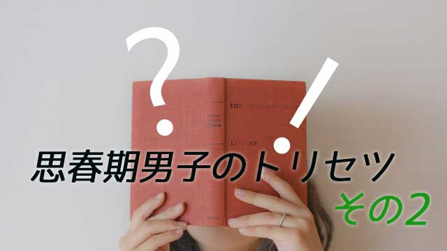

思春期の男の子にとって母親にされて嫌なことはどんなことだろう。
私自身の経験や多くの親子関係のエピソードを見ると次のようにまとめられる。
１ 何をするにもいちいち心配されること
２ 「勉強したの？ 宿題やったの？」とウルさく聞かれたり「この調子じゃ受からないわね」と嫌味を言われること
３ 友だちや異性など交遊関係について詮索されること
４ 勝手に部屋に入られたりスマホなどをチェックされること
５ 兄弟や他人（友人など）と比較されること
他にもあるが、これらは母親にされる嫌なことベスト５（ワースト５？）ではないかと思う。息子にとって、これらの行為はどれも母親の過干渉であり非常にウザく感じるものだ。
1.
特に問題なのは１の「心配」である。
親、特に母親は子どもを心配することが愛情の証しだと思い込んでいるが違う。
過去の記事でも何度か述べたが、子どもを心配する行為は「お前を信じていない」という不信の表明であり、むしろ有害なメッセージということになる。
愛とは信頼である。愛を表現したいのなら「子どもを信じる」が正解である。真逆なのだ。と言っても、我が子を心配する親が子どもを愛していないと言いたいのではない。
母親の、母性に基づく愛は子どもを危険から守り安全に生き延びる上で欠かせないものだ。母性愛は、子どものサバイバルのための、言わば本能的愛であり幼児期までは必要なものといえる。
だから子どもを心配することが愛情の証しといえるのは、幼児期までなら当てはまるが思春期まで持ち越してしまうなら意味が違う。
それは思春期の子ども（青年）を幼児とみなしているに等しいからだ。思春期以降になっても子どもを心配し続ける母親の心理は、子どもがいつまでも「幼いままでいて欲しい」という欲求の裏返しと言われても仕方ない。
つまり心配は子どもの自立を妨げるということ。自立欲求の高まる思春期の子どもが母親の心配をウザいと思うのは当然だということ。これらを踏まえ、思春期になったらお母さんたちは「心配」という本能的（母性的）愛情を、「信頼」という本来の愛情へと切り替えなければならない。
2.
ところで、男の子にとって思春期という、14歳ごろ～17，18歳くらいの時期は大人の男へと成長するための極めて大切な時である。サナギからチョウになるように、いわば脱皮の期間であり変身への準備となる。
さて男の子が「男」になるために必要なこととは一体何か。一言でいえばそれは冒険である。自覚するしないは別としてこの時期の男の子は冒険が必要だということを本能的に知っている。
反抗すること。危険なことをしてみること。友人仲間とつるんでバカなことをする。エッチなビデオ（DVD、ネットなど）をこっそり覗くこと。親から見たらこのような「下らない」行為も彼らには冒険なのだ。
冒険には当然ながら危険もつきまとう。
母親がいちばん嫌うものだ。
だが子どもたちはそれが必要なことを本能的に分かっていて、それこそが自分たちを成長させる要素と理解しているから、母親の「先回りした心配や懸念」がウザいと感じるのだ。
だからお母さんたちに言いたいこと。それは息子が少々危ないことやバカなことをしたり、反抗的な態度をとっていてもむやみに心配せずまずは大らかな気持ちで見守って欲しいということだ。
それが冒頭で話した「心配ではなく信頼」ということだ。
たとえ色々な問題事が起こっていたとしても、最終的には「ウチの子は大丈夫だ」と信じること。安心していること。これがいちばん大事だ。その信頼と安心を根底に置いた上で、気になることがあるのなら聞けばいい。叱ることが必要なら叱ればよいし、注意すべきことがあるなら注意すればいい。息子も耳を傾けることだろう。
それは母親が「子ども扱い」を止めたからだ。息子にしたら一人前と見なされたことでプライドも満足するし、親の考えも冷静に受け入れることができる。互いに一種のリスペクトし合う関係が生まれる。
母と息子が理想的な母子関係を築いている家庭では、このように相互信頼とリスペクトの好循環が起こっている。こうなると意見の対立があっても全く問題はない。それは単なる個性の相違でしかない。
要は思春期になったら息子を一人前とまず認めてしまえばよいのだ。
心配したりお説教したりは子どもを幼児扱いしているわけで益々悪い方向へいってしまうだろう。
3.
ここまでの理解を深めた上で、再度男の子の特徴と対応についてまとめてみたい。
まず第1に前回話したように思春期男子は一時的に言語能力が低くなる。これは頭の中で物事を抽象化したり体験の意味を一般化する、新たな言語能力の獲得のためであって心配はいらない。いわば幼児語の段階から、大人の言語へと進化するための過程なのだ。
だから男の子が無口になったり、親にあまり話さなくなるのは何か隠し事がある（それも多少はあるが）というより、上のような大人言語へ切り変わろうとする産みの苦しみだと考え、ムリに話させようとしないことだ。
特に母親は「言葉」によって息子を追い詰めないようにしたい。
さらに一般的に言うと、男の子は自らの「男らしさ」を同性から認められることで確認したいとする欲求をもつ。ずいぶん遠回りな方法で母親にはなかなか分かりづらいが、男は勉強でもスポーツでも優劣をつけたがるのだ。勉強やスポーツがダメなら腕力だったり、女の子にモテることだったり何らかの形で自分を顕示したいと思う。
そこでは同性から一目置かれるという状況が必要だ。なので冒険したがる。世間のルールから逸脱する行為、危険な行為、人と違ったことをすることが意味をもつ。すべては自分を試し、鍛え、男として認められようという行為だ。
「あいつなかなかやるな」「あいつはスゲー」という評価が重要なのだ。つまり勇気（？）というか英雄気取りなのだ。
女性から見ればバカげた所作だが、男は女性のように言葉で理解し与えられたルールに安住するより、いちいち体験しアチコチ頭をぶつけながら学んでいく生きものなのだ。不器用なのだ。
しかし、だからこそ男の子の「失敗」と「挫折」の冒険体験そしてある種の競争主義は、後で役に立つといえる。社会の「荒波」を乗り越え仕事などで成功する原動力となるからだ。思春期男子の、要領の悪い体験主義は「社会に参加する」ことのシミュレーションと考えればよい。
だから母親は「そんなことしてたら失敗するに決まってるのに」などと先回りして止めるのではなく、後々社会に羽ばたく準備なのだと了解して欲しい。「勉強だけガンバって欲しい」という大人の都合も余計なものだ。
女の子は放っておいても自然に育つが、男の子は学ばなければ大人の男にはなれない。
これは真実を現している。
どうかお母さんがたは、思春期の息子が「男」になるために葛藤し悩みアチコチ頭をぶつけながら学んでいる最中なのだということを分かって欲しい。
どうかお母さん方は心を静めて息子を信頼してみてください。
100%の信頼です。そうして過ごせば大きな変貌が起きるでしょう。